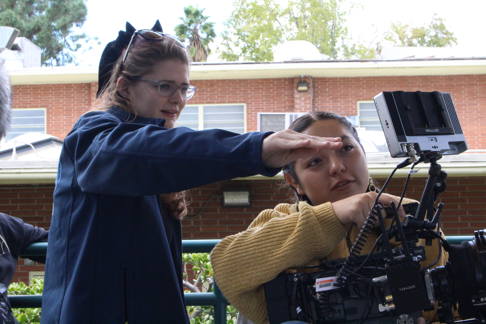
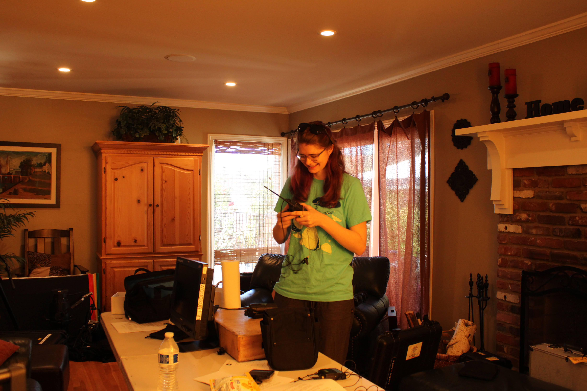
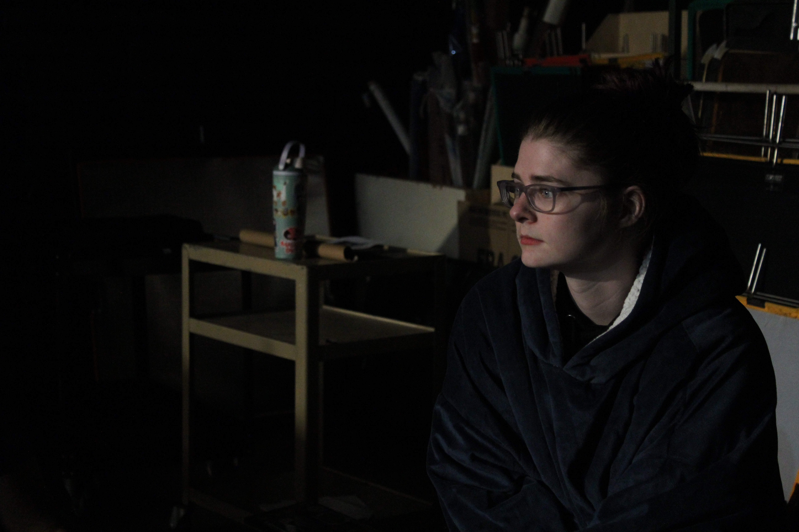

Undone
Writer | Director | Producer | Editor
Luella believes she is a victim of the “sweater curse” and that she’ll never find love. Her best friend Sawyer helps her move on from the past.
Film Student · Editor · Producer

A quick snapshot of your journey into film and what drives you on set.
Moya Schell is a 4th-year film student at Woodbury University and a current Resident Assistant. She was an Entertainment Development Intern at Roddenberry Entertainment in the summer of 2025. She also interned in the Disney College Program from 2023-2024, making magic in the Animal Kingdom parking lot. She has experience with sports camera operation, Xpression, and Show Control, gained from her work with Monta naPBS at Montana State University. Besides being a student, Moya is a member of Icon Winter Guard, Women in Film, and the SFV Knitting Guild. She was also a Choreographer for the Montana State Spirit of the West Color Guard.
Short films and productions I’ve contributed to as director, editor, or crew.

Writer | Director | Producer | Editor
Luella believes she is a victim of the “sweater curse” and that she’ll never find love. Her best friend Sawyer helps her move on from the past.

Producer | Unit Production Manager
Andie, a streamer, realizes the danger has stepped out of her screen and into her home. She must turn her fear into courage to survive.

Producer | Unit Production Manager
Markus Miguel King, a troubled teen from a pious upbringing, is the prime suspect in the murder of his family. He has very little time to prove his innocence.
Tools and strengths I bring to every production.
For projects, collaborations, or questions, reach out using the links below.
972-400-6939